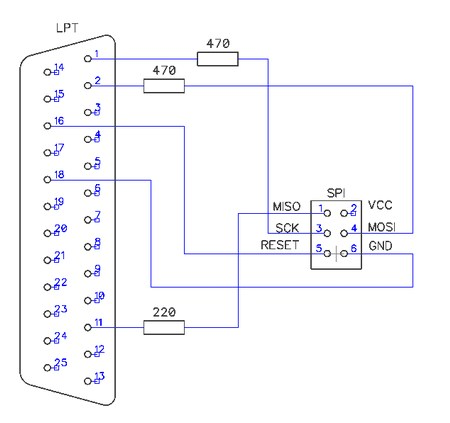

Собрав плату программатора по схеме "пять проводков", можно прошивать AVR-чип (AtMega).

Данная схема может работать даже без сопротивлений. Главное, чтобы проводки были не длинее 20-30 см., и собранные вместе в экранирующей оплетке. Нужно соединить сигналы в правой части схемы с соответсвующими ножками чипа. На чип нужно так же подать напряжение питания 5В.
Команда проверки программатора:
avrdude -c dapa -n -p m8
где
При нормальном считывании информации, в консоль выдасться примерно следующее:
> avrdude -n -p m8 -c dapa
avrdude: AVR device initialized and ready to accept instructions
Reading | ################################################## | 100% 0.00s
avrdude: Device signature = 0x1e9307
avrdude: safemode: Fuses OK (E:FF, H:CA, L:DF)
avrdude done. Thank you.
Команда заливки прошивки:
avrdude -c dapa -p m8 -U flash:w:Blink.cpp.elf
где -U flash:w:Blink.cpp.elf - указывается файл скомпилированного бинарника.
Процесс заливки прошивки выглядит так:
> avrdude -c dapa -p m8 -U flash:w:Blink.cpp.elf
avrdude: AVR device initialized and ready to accept instructions
Reading | ################################################## | 100% 0.00s
avrdude: Device signature = 0x1e9307
avrdude: NOTE: "flash" memory has been specified, an erase cycle will be performed
To disable this feature, specify the -D option.
avrdude: erasing chip
avrdude: reading input file "Blink.cpp.elf"
avrdude: input file Blink.cpp.elf auto detected as ELF
avrdude: writing flash (798 bytes):
Writing | ################################################## | 100% 0.22s
avrdude: 798 bytes of flash written
avrdude: verifying flash memory against Blink.cpp.elf:
avrdude: load data flash data from input file Blink.cpp.elf:
avrdude: input file Blink.cpp.elf auto detected as ELF
avrdude: input file Blink.cpp.elf contains 798 bytes
avrdude: reading on-chip flash data:
Reading | ################################################## | 100% 0.16s
avrdude: verifying ...
avrdude: 798 bytes of flash verified
avrdude: safemode: Fuses OK (E:FF, H:CA, L:DF)
avrdude done. Thank you.
Скомпилированный бинарник, который делает среда IDE Arduino, можно взять примерно по этим путям: